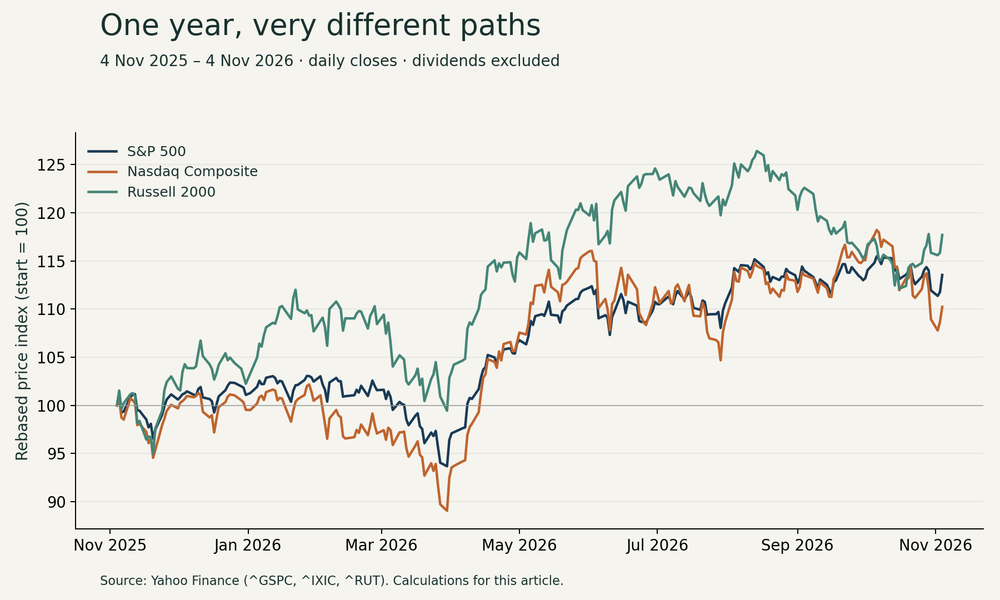
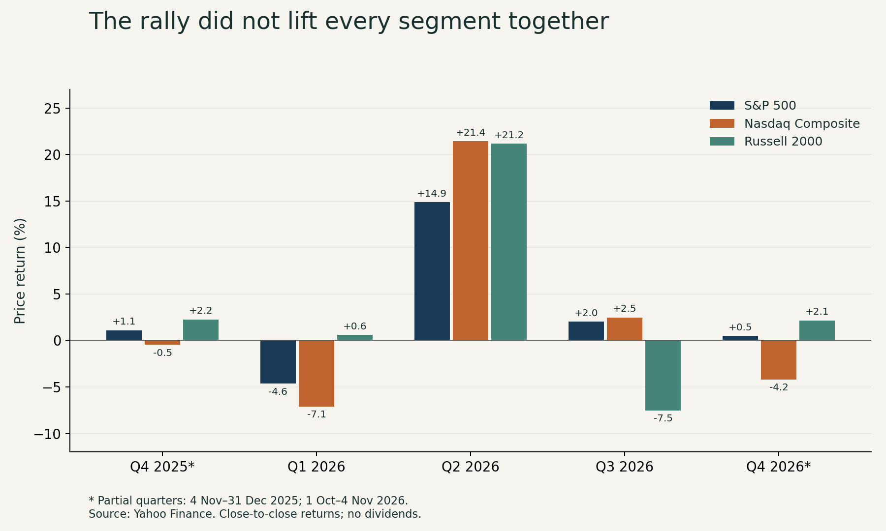

Why I wanted to look beyond the latest headline
The recent moves make me uneasy, but unease is not an analysis. I wanted to separate three questions: where prices spent time, what return an investor would have experienced between two closes, and whether different parts of the market moved together. A yearly average answers only the first.
For this note, the window is 4 November 2025 through 4 November 2026: 252 daily closing observations per index, including both endpoints. November 5 trading is deliberately excluded. Nasdaq means the Composite, not the Nasdaq-100. I added the Russell 2000 as a small-cap comparison. Together these are useful lenses on US equities, not a complete measure of every company or the economy.
What the averages can—and cannot—tell me
The mean daily close was 7,218.74 for the S&P 500, 24,710.98 for the Nasdaq Composite and 2,745.40 for the Russell 2000. Their point scales are arbitrary and cannot be compared as measures of expensiveness. Over the same endpoints, price returns were +13.54%, +10.23% and +17.70%, respectively.
The Nasdaq example is especially useful: its average level in the partial fourth quarter of 2026 was higher than its third-quarter average, yet its return since September 30 was negative. It began that stretch from a high level. A higher average therefore does not mean a positive return. Nor does trading above a one-year average establish fair value.
Sources: Yahoo Finance · Yahoo Finance · Yahoo Finance
S&P 500
| Period (closes) | Mean | Return |
|---|---|---|
| Full year (252) | 7,218.74 | +13.54% |
| 2025 Q4* (40) | 6,799.79 | +1.09% |
| 2026 Q1 (61) | 6,819.05 | -4.63% |
| 2026 Q2 (62) | 7,270.95 | +14.87% |
| 2026 Q3 (64) | 7,618.51 | +2.03% |
| 2026 Q4* (25) | 7,711.45 | +0.48% |
Nasdaq Composite
| Period (closes) | Mean | Return |
|---|---|---|
| Full year (252) | 24,710.98 | +10.23% |
| 2025 Q4* (40) | 23,197.88 | -0.46% |
| 2026 Q1 (61) | 22,823.62 | -7.11% |
| 2026 Q2 (62) | 25,288.80 | +21.41% |
| 2026 Q3 (64) | 26,175.91 | +2.47% |
| 2026 Q4* (25) | 26,553.93 | -4.19% |
Russell 2000
| Period (closes) | Mean | Return |
|---|---|---|
| Full year (252) | 2,745.40 | +17.70% |
| 2025 Q4* (40) | 2,474.28 | +2.25% |
| 2026 Q1 (61) | 2,598.15 | +0.58% |
| 2026 Q2 (62) | 2,828.05 | +21.15% |
| 2026 Q3 (64) | 2,954.87 | -7.52% |
| 2026 Q4* (25) | 2,797.28 | +2.15% |
* Partial quarters: 4 Nov–31 Dec 2025 and 1 Oct–4 Nov 2026. All means weight each observed trading-day close equally. Full-year mean uses all 252 observations, not an equal average of quarter means. Full-quarter returns use the prior quarter-end close; the initial partial segment uses 4 Nov 2025 as its baseline. No dividends, fees, inflation or currency conversion are included.

Late 2025: easier policy, but an uneven finish
In the portion of Q4 inside this window, the S&P 500 gained 1.09%, while the Nasdaq slipped 0.46%. The Fed cut its target range to 3.50–3.75% on December 10, citing increased downside employment risks. That is a verified policy change, not proof that the cut caused the period’s return.
FTSE Russell’s later review describes technology valuation and financing concerns emerging in Q4. My reading is that easier policy and doubts about expensive growth businesses could coexist. I would not use the full calendar year’s strong narrative to explain away this relatively flat two-month stretch.
Sources: Federal Reserve · FTSE Russell / LSEG
Q1 2026: the energy shock met technology doubts
The S&P 500 lost 4.63% and Nasdaq 7.11%; the Russell 2000 finished 0.58% higher. FTSE Russell linked the quarter’s changing leadership to software disruption fears, technology weakness and the Middle East energy shock. EIA reported on March 10 that reduced Hormuz shipments and production shut-ins had lifted oil prices.
The mechanism I would investigate has two sides: higher energy costs can reduce margins and spending, while renewed inflation pressure can keep discount rates elevated. Neither effect is identical across businesses. An energy producer and a fuel-intensive operator can face very different outcomes. Morgan Stanley attributed the March 31 rebound to hopes of de-escalation, illustrating why the last day’s relief should not be mistaken for the whole quarter’s experience.
Sources: FTSE Russell / LSEG · EIA · Morgan Stanley
Q2: a sharp recovery, not a smooth ride
The S&P 500 rebounded 14.87%, Nasdaq 21.41% and Russell 2000 21.15%. Yahoo Finance’s June 30 coverage emphasised semiconductor leadership and the AI infrastructure build-out, while distinguishing component suppliers from the largest technology spenders.
There was also a change in the energy backdrop. EIA’s July 7 retrospective reported increased Hormuz traffic after the June 18 agreement and a June Brent average of $85 a barrel, $22 below May. That supports an easing-cost narrative, but the July publication was not information investors possessed throughout Q2. I would align each announcement with its actual release date before testing a market reaction. The rebound is consistent with improving expectations; it does not establish how much of the return came from earnings, oil or valuation changes.
Sources: Yahoo Finance · EIA
Q3: the headline indexes concealed a split
This is the quarter I find most revealing. The S&P 500 rose 2.03% and Nasdaq 2.47%, while Russell 2000 fell 7.52%. MMBB’s review describes leadership concentrated in large technology and AI shares alongside deteriorating breadth. On September 16, the Fed raised its target range to 3.75–4.00%, pointing to elevated inflation.
Higher borrowing costs are a plausible pressure on refinancing-sensitive companies, but the index gap alone cannot prove that explanation. Sector weights, profitability and earnings revisions also differ. I would compare equal-weight versus capitalisation-weighted performance and constituent participation before claiming that the typical stock followed the S&P 500. Those breadth calculations are a next step, not results established by these three series.
Sources: Federal Reserve · MMBB
Q4 so far: a different average can hide a reversal
From September 30 to November 4, the S&P 500 gained 0.48%, Nasdaq fell 4.19%, and Russell 2000 rose 2.15%. These are partial-quarter results, not a forecast of December. Bloomberg’s October 19 public preview highlighted tougher scrutiny of premium AI valuations. FT’s November 4 public summary described a post-election rally with divergent reactions among AI-related businesses.
I could verify those public summaries, not the subscription articles in full. They supply competing questions rather than a complete explanation: are investors changing expected cash flows, financing assumptions or the price they are willing to pay? A single political headline cannot settle those questions, and this closing-price study intentionally does not incorporate November 5 intraday developments.
Sources: Bloomberg · Financial Times
How I want to analyse this as a finance student
My next step would be a small evidence table with four columns: the dated observation, a proposed explanation, the transmission channel and a competing explanation. For example, a rate rise matters through discounting and funding costs; it should not become an automatic explanation for every falling share. I would then compare earnings revisions, valuation multiples, Treasury yields, credit spreads and participation across sectors.
For a shipping company, I would connect the macro view to freight rates, vessel utilisation, bunker costs and debt terms. For real estate, I would examine rental income, occupancy, refinancing dates and capitalisation rates. The market narrative becomes useful when I can show which assumption in a company model it changes.
In Excel, I would reproduce the means with AVERAGE on the dated close ranges, calculate each return as ending close divided by the preceding boundary close minus one, and reconcile compounded segment returns with the full-year result. An automated update could collect new observations, but revised values and missing sessions should enter a review queue. I would keep the original snapshot so a changing chart never silently rewrites the evidence.
My conclusion is modest: the market’s path is more informative than one average or one alarming day. The next study I want to build is a shipping-company sensitivity model that tests whether the market’s macro story actually changes cash flow and valuation.
Method and limits
Daily close fields for Yahoo Finance tickers ^GSPC, ^IXIC and ^RUT were retrieved on 5 November 2026. Timestamps were converted to dates; all three series contained 252 distinct, matching dates and no missing close values. No weekends or holidays were forward-filled. Calculations retained unrounded values and display two decimals. Quarter means reconcile to the full-window mean when weighted by observation counts; compounded segment returns reconcile to the endpoint return. Recent S&P 500 and Nasdaq observations were spot-checked against FRED; selected quarter-end figures against published reviews. This is not an independent audit of every daily quote.
Historical sources are used to explain their own periods, not presented as fresh news. Explanations are interpretations supported by contemporary reporting and official releases, not estimates of causal contribution. Bloomberg and FT references are limited to publicly visible previews; no subscription-only analysis is represented as reviewed. The figures describe US-dollar price indexes, not a Norwegian investor’s NOK total return. This is a student research note, not a trading recommendation.
Sources
- Daily historical index closes: S&P 500 — Yahoo Finance · Published Daily series; through 2026-11-04; accessed 2026-11-05
- Daily historical index closes: Nasdaq Composite — Yahoo Finance · Published Daily series; through 2026-11-04; accessed 2026-11-05
- Daily historical index closes: Russell 2000 — Yahoo Finance · Published Daily series; through 2026-11-04; accessed 2026-11-05
- FOMC statement — Federal Reserve · Published 2025-12-10; accessed 2026-11-05
- Equity Factor Insights Q1 2026 — FTSE Russell / LSEG · Published 2026-04; accessed 2026-11-05
- March energy outlook amid Middle East conflict — EIA · Published 2026-03-10; accessed 2026-11-05
- S&P Market 1% Move Report — Morgan Stanley · Published 2026-03-31; accessed 2026-11-05
- Stocks cap strongest quarter since 2020 amid chip rally — Yahoo Finance · Published 2026-06-30; accessed 2026-11-05
- July energy outlook following reopening of Hormuz — EIA · Published 2026-07-07; accessed 2026-11-05
- FOMC statement — Federal Reserve · Published 2026-09-16; accessed 2026-11-05
- Quarterly Market Review: July–September 2026 — MMBB · Published Q3 2026 review; publication date not displayed; accessed 2026-11-05
- AI premium valuations face investor scrutiny — public preview only — Bloomberg · Published 2026-10-19; accessed 2026-11-05
- US stocks post best day since August after Democrats sweep midterms — public headline and standfirst only — Financial Times · Published 2026-11-04; accessed 2026-11-05
- S&P 500 series definition and recent observations — FRED / S&P Dow Jones Indices · Published Daily series; accessed 2026-11-05
- Nasdaq Composite series definition and recent observations — FRED / Nasdaq · Published Daily series; accessed 2026-11-05